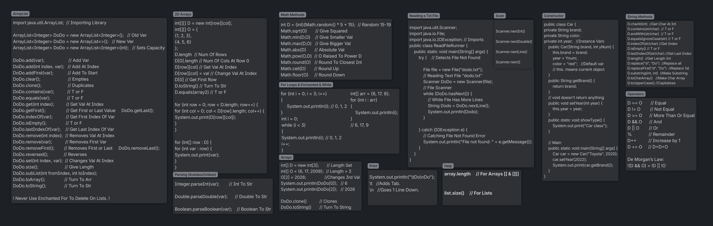

Documentation

Java CodeSheet Made By DoDo
This website is made by Doruk Kılıç with assistance of
ChatGPT.
I designed the structure, chose the content and organized the ideas,
while ChatGPT helped with writing the code, formatting, styling the HTML and CSS.